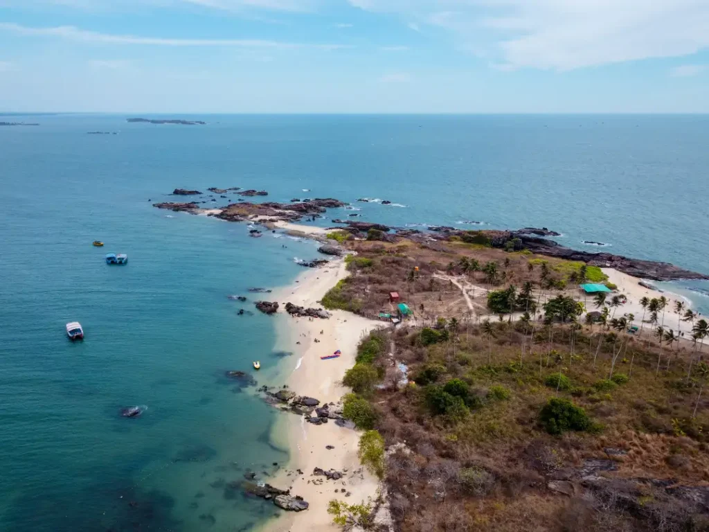

St. Mary's Island
Known for its unique hexagonal rock formations and crystal-clear waters, St. Mary's Island is a must-visit for nature lovers and photographers.
Travel Tips
- Best time to visit: October to March
- Carry sunscreen and water
- Boat rides available from Malpe Beach